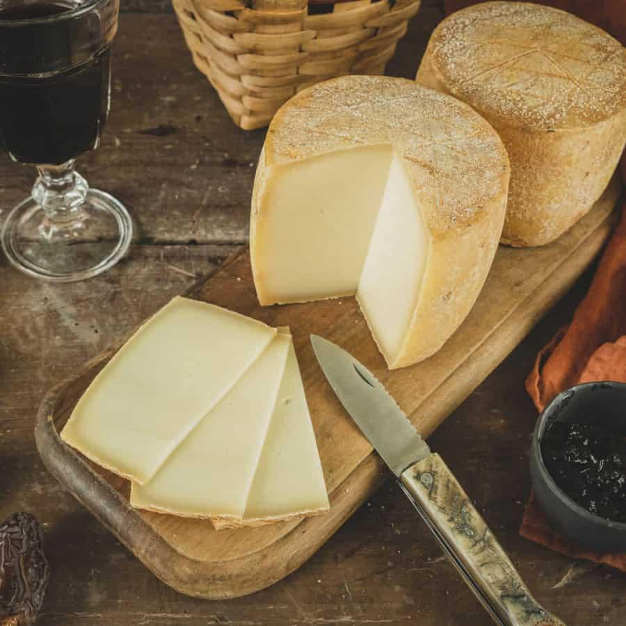

Fromage de
brebis
du Pays de Sault


⟹ Produits du Terroir ⟸
Sur les hauts plateaux du Pays de Sault, dans la Haute vallée de l’Aude, l’élevage est intimement lié à un territoire de moyenne montagne fait de prairies, de forêts et de plateaux calcaires. Cette vocation pastorale s’inscrit dans une histoire rurale très ancienne : dans ces reliefs où les hivers sont longs et où les terres labourables sont limitées, les troupeaux ont longtemps permis de valoriser des espaces difficiles à cultiver. Le Pays de Sault, attesté dès le haut Moyen Âge et longtemps organisé autour de communautés montagnardes relativement isolées, a ainsi développé une économie où l’élevage, les pâturages et les échanges avec les vallées voisines occupaient une place essentielle.

Les brebis fournissaient plusieurs ressources à la fois : lait, viande, laine et fumier. Le fromage constituait surtout un moyen particulièrement efficace de conserver et de concentrer le lait dans un produit transportable. Dans les fermes et les petites unités familiales, les gestes de caillage, d’égouttage, de pressage, de salage puis d’affinage répondaient à cette nécessité de conserver une production saisonnière bien au-delà de la traite.
La fabrication de tommes appartient au vaste patrimoine fromager des Pyrénées. Le principe de la pâte pressée non cuite convient bien aux productions montagnardes : le caillé est débarrassé d’une partie de son petit-lait, moulé puis pressé avant un affinage de plusieurs semaines ou de plusieurs mois. Pendant cette maturation, la pâte perd de l’humidité, sa texture s’assouplit ou se raffermit et ses arômes gagnent en complexité. Le goût dépend fortement du lait, de la saison, de l’alimentation du troupeau, de la flore des pâturages, du salage, de la cave et de la durée d’affinage.
La conduite des troupeaux a elle aussi évolué. Les déplacements saisonniers entre secteurs bas, prairies et pâturages d’altitude ont longtemps participé à l’entretien des paysages ouverts. Plus largement, l’élevage demeure aujourd’hui une activité structurante de l’agriculture audoise de montagne ; le plateau du Pays de Sault fait notamment partie des secteurs où se maintiennent des élevages ovins et bovins valorisant l’herbe et les parcours.
Il faut cependant distinguer cette tradition fromagère locale des grandes appellations pyrénéennes : la « tomme de brebis du Pays de Sault » n’est pas une appellation d’origine protégée définissant une recette unique. Elle désigne plutôt des productions fermières ou artisanales ancrées dans le territoire. D’une exploitation à l’autre, races de brebis, pratiques de traite, ferments, formats, croûtes et affinages peuvent donc varier, ce qui explique la diversité des tommes proposées.
Le regain d’intérêt contemporain pour les circuits courts, les marchés de producteurs et les produits fermiers a donné une nouvelle visibilité à ces fabrications de montagne. Au-delà du fromage lui-même, elles prolongent un système pastoral qui contribue à maintenir des exploitations dans les hauts cantons, à entretenir les prairies et les espaces ouverts et à transmettre des savoir-faire de transformation du lait à petite échelle.
Tomme jeune : plus douce et souple, affinée quelques semaines seulement.
Tomme affinée : plus corsée et cassante, affinée plusieurs mois en cave.
Brousse de brebis fraîche : version non affinée, dégustée sucrée ou salée en dessert.
Le fromage de brebis du Pays de Sault se déguste avant tout à la ferme, où les producteurs proposent souvent une dégustation avant l'achat.
Fermes du plateau du Pays de Sault qui vendent leur production en direct, selon la saison de fabrication.
Marché de Belcaire où plusieurs producteurs locaux tiennent régulièrement un étal.
Fromageries de la Haute vallée de l'Aude qui référencent les tommes fermières du plateau.